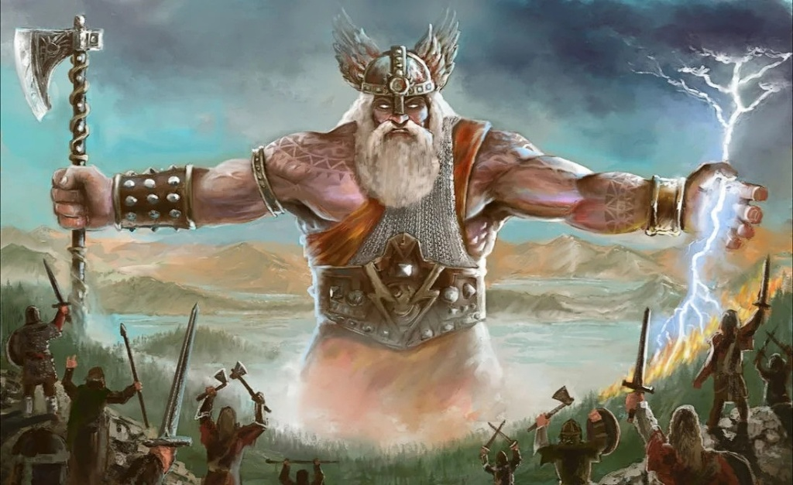
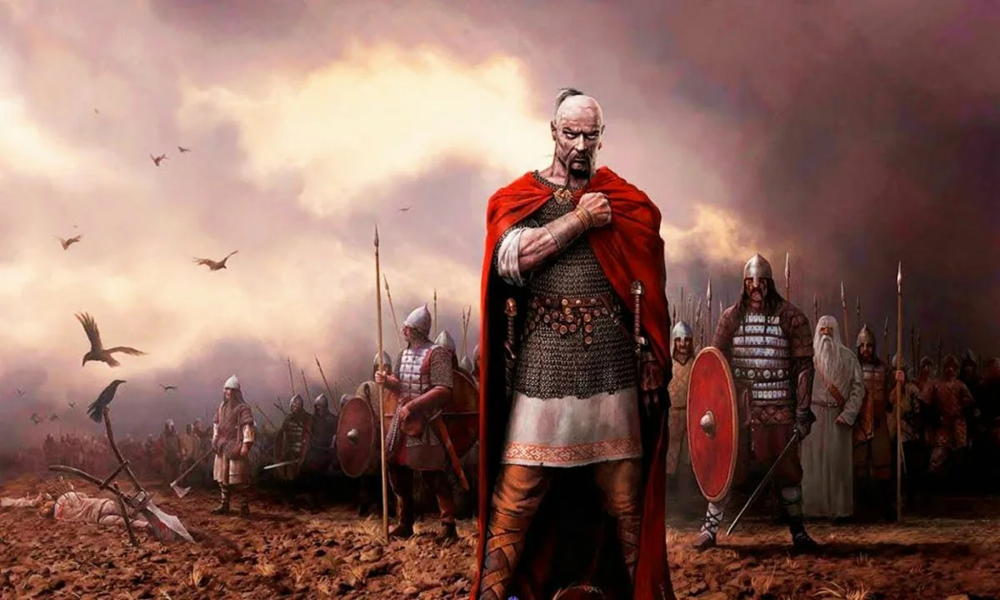

ПРОФЕССОР БАГИРОВ
Обладатель 4 высших образований исторического факультета МГУ: 1.Кафедра истории России до начала XIX века, 2.Кафедра истории России XIX века – начала XX века, 3.Кафедра истории древнего мира, 4.Кафедра истории южных и западных славян), а также кандидат исторических наук - Алексей Сергеевич Багиров.
ИСТОРИЧЕСКИЕ ЛИЧНОСТИ

Бог Перун-древнеславянкий бог, помог русичам в войне с ящерами

Казимир Победоносный-победил ящеров под Байкалам